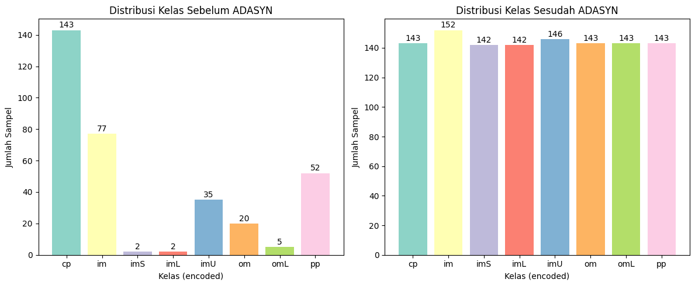
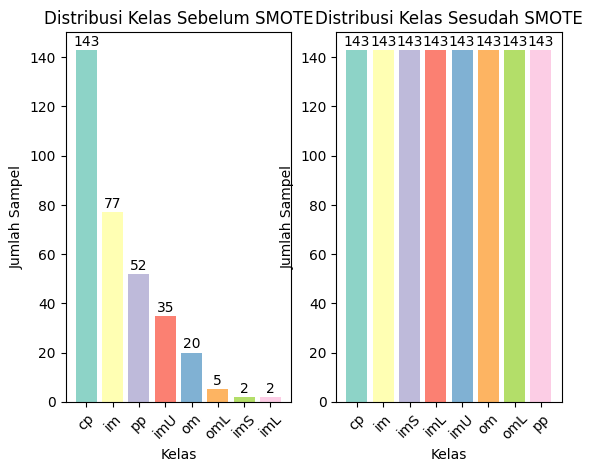

Penyeimbangan Data#
1. Download dataset ecoli dari UCI https://archive.ics.uci.edu/dataset/39/ecoli#
2. Simpan didatabase MySQL#
berikut adalah tabel dataset:

2.1 Import library#
import matplotlib.pyplot as plt
import pandas as pd
import numpy as np
from sqlalchemy import create_engine
from sklearn.decomposition import PCA
from sklearn.preprocessing import LabelEncoder
from sklearn.discriminant_analysis import LinearDiscriminantAnalysis
from sklearn.preprocessing import StandardScaler
from imblearn.over_sampling import ADASYN, SMOTE
from collections import Counter
import seaborn as sns
2.2 load dataset dari MYSQL menggunakan sqlalchemy#
engine = create_engine("mysql+pymysql://root:@localhost/ecoli")
df = pd.read_sql("SELECT * FROM ecoli;", engine)
--------------------------------------------------------------------------
ConnectionRefusedError Traceback (most recent call last)
File ~\AppData\Local\Programs\Python\Python310\lib\site-packages\pymysql\connections.py:661, in Connection.connect(self, sock)
660 try:
--> 661 sock = socket.create_connection(
662 (self.host, self.port), self.connect_timeout, **kwargs
663 )
664 break
File ~\AppData\Local\Programs\Python\Python310\lib\socket.py:845, in create_connection(address, timeout, source_address)
844 try:
--> 845 raise err
846 finally:
847 # Break explicitly a reference cycle
File ~\AppData\Local\Programs\Python\Python310\lib\socket.py:833, in create_connection(address, timeout, source_address)
832 sock.bind(source_address)
--> 833 sock.connect(sa)
834 # Break explicitly a reference cycle
ConnectionRefusedError: [WinError 10061] No connection could be made because the target machine actively refused it
During handling of the above exception, another exception occurred:
OperationalError Traceback (most recent call last)
File ~\AppData\Local\Programs\Python\Python310\lib\site-packages\sqlalchemy\engine\base.py:143, in Connection.__init__(self, engine, connection, _has_events, _allow_revalidate, _allow_autobegin)
142 try:
--> 143 self._dbapi_connection = engine.raw_connection()
144 except dialect.loaded_dbapi.Error as err:
File ~\AppData\Local\Programs\Python\Python310\lib\site-packages\sqlalchemy\engine\base.py:3301, in Engine.raw_connection(self)
3280 """Return a "raw" DBAPI connection from the connection pool.
3281
3282 The returned object is a proxied version of the DBAPI
(...)
3299
3300 """
-> 3301 return self.pool.connect()
File ~\AppData\Local\Programs\Python\Python310\lib\site-packages\sqlalchemy\pool\base.py:447, in Pool.connect(self)
440 """Return a DBAPI connection from the pool.
441
442 The connection is instrumented such that when its
(...)
445
446 """
--> 447 return _ConnectionFairy._checkout(self)
File ~\AppData\Local\Programs\Python\Python310\lib\site-packages\sqlalchemy\pool\base.py:1264, in _ConnectionFairy._checkout(cls, pool, threadconns, fairy)
1263 if not fairy:
-> 1264 fairy = _ConnectionRecord.checkout(pool)
1266 if threadconns is not None:
File ~\AppData\Local\Programs\Python\Python310\lib\site-packages\sqlalchemy\pool\base.py:711, in _ConnectionRecord.checkout(cls, pool)
710 else:
--> 711 rec = pool._do_get()
713 try:
File ~\AppData\Local\Programs\Python\Python310\lib\site-packages\sqlalchemy\pool\impl.py:177, in QueuePool._do_get(self)
176 except:
--> 177 with util.safe_reraise():
178 self._dec_overflow()
File ~\AppData\Local\Programs\Python\Python310\lib\site-packages\sqlalchemy\util\langhelpers.py:224, in safe_reraise.__exit__(self, type_, value, traceback)
223 self._exc_info = None # remove potential circular references
--> 224 raise exc_value.with_traceback(exc_tb)
225 else:
File ~\AppData\Local\Programs\Python\Python310\lib\site-packages\sqlalchemy\pool\impl.py:175, in QueuePool._do_get(self)
174 try:
--> 175 return self._create_connection()
176 except:
File ~\AppData\Local\Programs\Python\Python310\lib\site-packages\sqlalchemy\pool\base.py:388, in Pool._create_connection(self)
386 """Called by subclasses to create a new ConnectionRecord."""
--> 388 return _ConnectionRecord(self)
File ~\AppData\Local\Programs\Python\Python310\lib\site-packages\sqlalchemy\pool\base.py:673, in _ConnectionRecord.__init__(self, pool, connect)
672 if connect:
--> 673 self.__connect()
674 self.finalize_callback = deque()
File ~\AppData\Local\Programs\Python\Python310\lib\site-packages\sqlalchemy\pool\base.py:899, in _ConnectionRecord.__connect(self)
898 except BaseException as e:
--> 899 with util.safe_reraise():
900 pool.logger.debug("Error on connect(): %s", e)
File ~\AppData\Local\Programs\Python\Python310\lib\site-packages\sqlalchemy\util\langhelpers.py:224, in safe_reraise.__exit__(self, type_, value, traceback)
223 self._exc_info = None # remove potential circular references
--> 224 raise exc_value.with_traceback(exc_tb)
225 else:
File ~\AppData\Local\Programs\Python\Python310\lib\site-packages\sqlalchemy\pool\base.py:895, in _ConnectionRecord.__connect(self)
894 self.starttime = time.time()
--> 895 self.dbapi_connection = connection = pool._invoke_creator(self)
896 pool.logger.debug("Created new connection %r", connection)
File ~\AppData\Local\Programs\Python\Python310\lib\site-packages\sqlalchemy\engine\create.py:661, in create_engine.<locals>.connect(connection_record)
659 return connection
--> 661 return dialect.connect(*cargs, **cparams)
File ~\AppData\Local\Programs\Python\Python310\lib\site-packages\sqlalchemy\engine\default.py:629, in DefaultDialect.connect(self, *cargs, **cparams)
627 def connect(self, *cargs: Any, **cparams: Any) -> DBAPIConnection:
628 # inherits the docstring from interfaces.Dialect.connect
--> 629 return self.loaded_dbapi.connect(*cargs, **cparams)
File ~\AppData\Local\Programs\Python\Python310\lib\site-packages\pymysql\connections.py:365, in Connection.__init__(self, user, password, host, database, unix_socket, port, charset, collation, sql_mode, read_default_file, conv, use_unicode, client_flag, cursorclass, init_command, connect_timeout, read_default_group, autocommit, local_infile, max_allowed_packet, defer_connect, auth_plugin_map, read_timeout, write_timeout, bind_address, binary_prefix, program_name, server_public_key, ssl, ssl_ca, ssl_cert, ssl_disabled, ssl_key, ssl_key_password, ssl_verify_cert, ssl_verify_identity, compress, named_pipe, passwd, db)
364 else:
--> 365 self.connect()
File ~\AppData\Local\Programs\Python\Python310\lib\site-packages\pymysql\connections.py:723, in Connection.connect(self, sock)
722 print(exc.traceback)
--> 723 raise exc
725 # If e is neither DatabaseError or IOError, It's a bug.
726 # But raising AssertionError hides original error.
727 # So just reraise it.
OperationalError: (2003, "Can't connect to MySQL server on 'localhost' ([WinError 10061] No connection could be made because the target machine actively refused it)")
The above exception was the direct cause of the following exception:
OperationalError Traceback (most recent call last)
Cell In[2], line 2
1 engine = create_engine("mysql+pymysql://root:@localhost/ecoli")
----> 2 df = pd.read_sql("SELECT * FROM ecoli;", engine)
File ~\AppData\Local\Programs\Python\Python310\lib\site-packages\pandas\io\sql.py:652, in read_sql(sql, con, index_col, coerce_float, params, parse_dates, columns, chunksize, dtype_backend, dtype)
649 dtype_backend = "numpy" # type: ignore[assignment]
650 assert dtype_backend is not lib.no_default
--> 652 with pandasSQL_builder(con) as pandas_sql:
653 if isinstance(pandas_sql, SQLiteDatabase):
654 return pandas_sql.read_query(
655 sql,
656 index_col=index_col,
(...)
662 dtype=dtype,
663 )
File ~\AppData\Local\Programs\Python\Python310\lib\site-packages\pandas\io\sql.py:851, in pandasSQL_builder(con, schema, need_transaction)
848 raise ImportError("Using URI string without sqlalchemy installed.")
850 if sqlalchemy is not None and isinstance(con, (str, sqlalchemy.engine.Connectable)):
--> 851 return SQLDatabase(con, schema, need_transaction)
853 warnings.warn(
854 "pandas only supports SQLAlchemy connectable (engine/connection) or "
855 "database string URI or sqlite3 DBAPI2 connection. Other DBAPI2 "
(...)
858 stacklevel=find_stack_level(),
859 )
860 return SQLiteDatabase(con)
File ~\AppData\Local\Programs\Python\Python310\lib\site-packages\pandas\io\sql.py:1576, in SQLDatabase.__init__(self, con, schema, need_transaction)
1574 self.exit_stack.callback(con.dispose)
1575 if isinstance(con, Engine):
-> 1576 con = self.exit_stack.enter_context(con.connect())
1577 if need_transaction and not con.in_transaction():
1578 self.exit_stack.enter_context(con.begin())
File ~\AppData\Local\Programs\Python\Python310\lib\site-packages\sqlalchemy\engine\base.py:3277, in Engine.connect(self)
3254 def connect(self) -> Connection:
3255 """Return a new :class:`_engine.Connection` object.
3256
3257 The :class:`_engine.Connection` acts as a Python context manager, so
(...)
3274
3275 """
-> 3277 return self._connection_cls(self)
File ~\AppData\Local\Programs\Python\Python310\lib\site-packages\sqlalchemy\engine\base.py:145, in Connection.__init__(self, engine, connection, _has_events, _allow_revalidate, _allow_autobegin)
143 self._dbapi_connection = engine.raw_connection()
144 except dialect.loaded_dbapi.Error as err:
--> 145 Connection._handle_dbapi_exception_noconnection(
146 err, dialect, engine
147 )
148 raise
149 else:
File ~\AppData\Local\Programs\Python\Python310\lib\site-packages\sqlalchemy\engine\base.py:2440, in Connection._handle_dbapi_exception_noconnection(cls, e, dialect, engine, is_disconnect, invalidate_pool_on_disconnect, is_pre_ping)
2438 elif should_wrap:
2439 assert sqlalchemy_exception is not None
-> 2440 raise sqlalchemy_exception.with_traceback(exc_info[2]) from e
2441 else:
2442 assert exc_info[1] is not None
File ~\AppData\Local\Programs\Python\Python310\lib\site-packages\sqlalchemy\engine\base.py:143, in Connection.__init__(self, engine, connection, _has_events, _allow_revalidate, _allow_autobegin)
141 if connection is None:
142 try:
--> 143 self._dbapi_connection = engine.raw_connection()
144 except dialect.loaded_dbapi.Error as err:
145 Connection._handle_dbapi_exception_noconnection(
146 err, dialect, engine
147 )
File ~\AppData\Local\Programs\Python\Python310\lib\site-packages\sqlalchemy\engine\base.py:3301, in Engine.raw_connection(self)
3279 def raw_connection(self) -> PoolProxiedConnection:
3280 """Return a "raw" DBAPI connection from the connection pool.
3281
3282 The returned object is a proxied version of the DBAPI
(...)
3299
3300 """
-> 3301 return self.pool.connect()
File ~\AppData\Local\Programs\Python\Python310\lib\site-packages\sqlalchemy\pool\base.py:447, in Pool.connect(self)
439 def connect(self) -> PoolProxiedConnection:
440 """Return a DBAPI connection from the pool.
441
442 The connection is instrumented such that when its
(...)
445
446 """
--> 447 return _ConnectionFairy._checkout(self)
File ~\AppData\Local\Programs\Python\Python310\lib\site-packages\sqlalchemy\pool\base.py:1264, in _ConnectionFairy._checkout(cls, pool, threadconns, fairy)
1256 @classmethod
1257 def _checkout(
1258 cls,
(...)
1261 fairy: Optional[_ConnectionFairy] = None,
1262 ) -> _ConnectionFairy:
1263 if not fairy:
-> 1264 fairy = _ConnectionRecord.checkout(pool)
1266 if threadconns is not None:
1267 threadconns.current = weakref.ref(fairy)
File ~\AppData\Local\Programs\Python\Python310\lib\site-packages\sqlalchemy\pool\base.py:711, in _ConnectionRecord.checkout(cls, pool)
709 rec = cast(_ConnectionRecord, pool._do_get())
710 else:
--> 711 rec = pool._do_get()
713 try:
714 dbapi_connection = rec.get_connection()
File ~\AppData\Local\Programs\Python\Python310\lib\site-packages\sqlalchemy\pool\impl.py:177, in QueuePool._do_get(self)
175 return self._create_connection()
176 except:
--> 177 with util.safe_reraise():
178 self._dec_overflow()
179 raise
File ~\AppData\Local\Programs\Python\Python310\lib\site-packages\sqlalchemy\util\langhelpers.py:224, in safe_reraise.__exit__(self, type_, value, traceback)
222 assert exc_value is not None
223 self._exc_info = None # remove potential circular references
--> 224 raise exc_value.with_traceback(exc_tb)
225 else:
226 self._exc_info = None # remove potential circular references
File ~\AppData\Local\Programs\Python\Python310\lib\site-packages\sqlalchemy\pool\impl.py:175, in QueuePool._do_get(self)
173 if self._inc_overflow():
174 try:
--> 175 return self._create_connection()
176 except:
177 with util.safe_reraise():
File ~\AppData\Local\Programs\Python\Python310\lib\site-packages\sqlalchemy\pool\base.py:388, in Pool._create_connection(self)
385 def _create_connection(self) -> ConnectionPoolEntry:
386 """Called by subclasses to create a new ConnectionRecord."""
--> 388 return _ConnectionRecord(self)
File ~\AppData\Local\Programs\Python\Python310\lib\site-packages\sqlalchemy\pool\base.py:673, in _ConnectionRecord.__init__(self, pool, connect)
671 self.__pool = pool
672 if connect:
--> 673 self.__connect()
674 self.finalize_callback = deque()
File ~\AppData\Local\Programs\Python\Python310\lib\site-packages\sqlalchemy\pool\base.py:899, in _ConnectionRecord.__connect(self)
897 self.fresh = True
898 except BaseException as e:
--> 899 with util.safe_reraise():
900 pool.logger.debug("Error on connect(): %s", e)
901 else:
902 # in SQLAlchemy 1.4 the first_connect event is not used by
903 # the engine, so this will usually not be set
File ~\AppData\Local\Programs\Python\Python310\lib\site-packages\sqlalchemy\util\langhelpers.py:224, in safe_reraise.__exit__(self, type_, value, traceback)
222 assert exc_value is not None
223 self._exc_info = None # remove potential circular references
--> 224 raise exc_value.with_traceback(exc_tb)
225 else:
226 self._exc_info = None # remove potential circular references
File ~\AppData\Local\Programs\Python\Python310\lib\site-packages\sqlalchemy\pool\base.py:895, in _ConnectionRecord.__connect(self)
893 try:
894 self.starttime = time.time()
--> 895 self.dbapi_connection = connection = pool._invoke_creator(self)
896 pool.logger.debug("Created new connection %r", connection)
897 self.fresh = True
File ~\AppData\Local\Programs\Python\Python310\lib\site-packages\sqlalchemy\engine\create.py:661, in create_engine.<locals>.connect(connection_record)
658 if connection is not None:
659 return connection
--> 661 return dialect.connect(*cargs, **cparams)
File ~\AppData\Local\Programs\Python\Python310\lib\site-packages\sqlalchemy\engine\default.py:629, in DefaultDialect.connect(self, *cargs, **cparams)
627 def connect(self, *cargs: Any, **cparams: Any) -> DBAPIConnection:
628 # inherits the docstring from interfaces.Dialect.connect
--> 629 return self.loaded_dbapi.connect(*cargs, **cparams)
File ~\AppData\Local\Programs\Python\Python310\lib\site-packages\pymysql\connections.py:365, in Connection.__init__(self, user, password, host, database, unix_socket, port, charset, collation, sql_mode, read_default_file, conv, use_unicode, client_flag, cursorclass, init_command, connect_timeout, read_default_group, autocommit, local_infile, max_allowed_packet, defer_connect, auth_plugin_map, read_timeout, write_timeout, bind_address, binary_prefix, program_name, server_public_key, ssl, ssl_ca, ssl_cert, ssl_disabled, ssl_key, ssl_key_password, ssl_verify_cert, ssl_verify_identity, compress, named_pipe, passwd, db)
363 self._sock = None
364 else:
--> 365 self.connect()
File ~\AppData\Local\Programs\Python\Python310\lib\site-packages\pymysql\connections.py:723, in Connection.connect(self, sock)
721 if DEBUG:
722 print(exc.traceback)
--> 723 raise exc
725 # If e is neither DatabaseError or IOError, It's a bug.
726 # But raising AssertionError hides original error.
727 # So just reraise it.
728 raise
OperationalError: (pymysql.err.OperationalError) (2003, "Can't connect to MySQL server on 'localhost' ([WinError 10061] No connection could be made because the target machine actively refused it)")
(Background on this error at: https://sqlalche.me/e/20/e3q8)
Distribusi Kelas#
# 2. Tampilkan data awal dalam bentuk tabel
print("=" * 60)
print("DATA AWAL ECOLI DATASET")
print("=" * 60)
print(f"Jumlah data: {len(df)}")
print(f"Jumlah fitur: {len(df.columns) - 2}") # excluding name and class
print(f"Jumlah kelas: {df['class'].nunique()}")
print("\n")
# Tampilkan preview data
print("Preview data (5 baris pertama):")
print(df.head())
print("\n")
# Tampilkan informasi statistik
print("Statistik deskriptif data:")
print(df.drop(columns=['name', 'class']).describe())
print("\n")
# Tampilkan distribusi kelas
print("Distribusi kelas:")
class_distribution = df['class'].value_counts()
print(class_distribution)
print("\n")
# 3. Visualisasi data awal
plt.figure(figsize=(15, 10))
# Subplot 1: Distribusi kelas (Bar plot)
plt.subplot(2, 3, 1)
class_distribution.plot(kind='bar', color=plt.cm.Set3(np.arange(len(class_distribution))))
plt.title('Distribusi Kelas Ecoli Dataset')
plt.xlabel('Kelas')
plt.ylabel('Jumlah Sampel')
plt.xticks(rotation=45)
for i, v in enumerate(class_distribution):
plt.text(i, v + 0.5, str(v), ha='center', va='bottom')
# Subplot 2: Heatmap korelasi
plt.subplot(2, 3, 2)
numeric_df = df.drop(columns=['name', 'class'])
correlation_matrix = numeric_df.corr()
sns.heatmap(correlation_matrix, annot=True, cmap='coolwarm', center=0)
plt.title('Heatmap Korelasi Fitur')
# Subplot 4: Pairplot untuk beberapa fitur (maks 5 fitur agar tidak terlalu padat)
plt.subplot(2, 3, 4)
if len(numeric_df.columns) > 5:
sample_features = numeric_df.columns[:5] # Ambil 5 fitur pertama
else:
sample_features = numeric_df.columns
for i, feature in enumerate(sample_features):
plt.scatter(range(len(df)), df[feature], alpha=0.6, label=feature, s=10)
plt.title('Scatter Plot Beberapa Fitur')
plt.xlabel('Index Data')
plt.ylabel('Nilai Fitur')
plt.legend()
# Subplot 5: Pie chart distribusi kelas
plt.subplot(2, 3, 5)
plt.pie(class_distribution.values, labels=class_distribution.index,
autopct='%1.1f%%', colors=plt.cm.Pastel1(np.arange(len(class_distribution))))
plt.title('Persentase Distribusi Kelas')
plt.tight_layout()
plt.show()
============================================================
DATA AWAL ECOLI DATASET
============================================================
Jumlah data: 336
Jumlah fitur: 7
Jumlah kelas: 8
Preview data (5 baris pertama):
name mcg gvh lip chg aac alm1 alm2 class
0 AAT_ECOLI 0.49 0.29 0.48 0.5 0.56 0.24 0.35 cp
1 ACEA_ECOLI 0.07 0.40 0.48 0.5 0.54 0.35 0.44 cp
2 ACEK_ECOLI 0.56 0.40 0.48 0.5 0.49 0.37 0.46 cp
3 ACKA_ECOLI 0.59 0.49 0.48 0.5 0.52 0.45 0.36 cp
4 ADI_ECOLI 0.23 0.32 0.48 0.5 0.55 0.25 0.35 cp
Statistik deskriptif data:
mcg gvh lip chg aac alm1 \
count 336.000000 336.000000 336.000000 336.000000 336.000000 336.000000
mean 0.500060 0.500000 0.495476 0.501488 0.500030 0.500179
std 0.194634 0.148157 0.088495 0.027277 0.122376 0.215751
min 0.000000 0.160000 0.480000 0.500000 0.000000 0.030000
25% 0.340000 0.400000 0.480000 0.500000 0.420000 0.330000
50% 0.500000 0.470000 0.480000 0.500000 0.495000 0.455000
75% 0.662500 0.570000 0.480000 0.500000 0.570000 0.710000
max 0.890000 1.000000 1.000000 1.000000 0.880000 1.000000
alm2
count 336.000000
mean 0.499732
std 0.209411
min 0.000000
25% 0.350000
50% 0.430000
75% 0.710000
max 0.990000
Distribusi kelas:
class
cp 143
im 77
pp 52
imU 35
om 20
omL 5
imS 2
imL 2
Name: count, dtype: int64
3. Tampilkan data dalam scatter plot menggunakan PCA. PCA mentransformasi data menjadi dimensi rendah (2)#
Pisahkan fitur dan label
X = df.drop(columns=["name", "class"])
y = df["class"]
Transform data dan tampilkan scatter plot menggunakan PCA
# 1. Normalisasi
X_scaled = StandardScaler().fit_transform(X)
le = LabelEncoder()
y_encoded = le.fit_transform(y)
# 2. PCA (2 komponen)
pca = PCA(n_components=2)
X_r = pca.fit_transform(X_scaled)
# 3. Tampilkan explained variance
print("Explained variance ratio (PC1, PC2):", pca.explained_variance_ratio_)
# 4. Plot hasil PCA
plt.figure(figsize=(8,6))
for target_name in np.unique(y):
plt.scatter(
X_r[y == target_name, 0],
X_r[y == target_name, 1],
alpha=0.8,
label=target_name
)
plt.legend(loc="best", shadow=False, scatterpoints=1)
plt.title("PCA of Original Dataset")
plt.xlabel("PC1")
plt.ylabel("PC2")
plt.grid()
plt.show()
Explained variance ratio (PC1, PC2): [0.31508933 0.20874152]
4. Lakukan penyeimbangan data menggunakan ADASYN#
print("Distribusi kelas sebelum ADASYN:")
print(f"{sorted(Counter(y).items())}")
nt = X
ns = y
class_counts = Counter(y)
temp = sorted(class_counts.values())
print(f"Sorted counts untuk iterasi: {temp}")
for i in range(0, 7):
n = max(1, temp[i] - 1)
print(f"\nIterasi {i+1}: menggunakan k_neighbors={n}")
try:
nt, ns = ADASYN(n_neighbors=n, sampling_strategy='minority').fit_resample(nt, ns)
print(f"Hasil iterasi {i+1}: {sorted(Counter(ns).items())}")
except Exception as e:
print(f"Error pada iterasi {i+1}: {e}")
break
print(f"\nDistribusi kelas setelah ADASYN:")
print(f"{sorted(Counter(ns).items())}")
print(f"\nTotal samples sebelum: {len(y)}")
print(f"Total samples setelah: {len(ns)}")
print(f"Data yang ditambahkan: {len(ns) - len(y)}")
Distribusi kelas sebelum ADASYN:
[('cp', 143), ('im', 77), ('imL', 2), ('imS', 2), ('imU', 35), ('om', 20), ('omL', 5), ('pp', 52)]
Sorted counts untuk iterasi: [2, 2, 5, 20, 35, 52, 77, 143]
Iterasi 1: menggunakan k_neighbors=1
Hasil iterasi 1: [('cp', 143), ('im', 77), ('imL', 142), ('imS', 2), ('imU', 35), ('om', 20), ('omL', 5), ('pp', 52)]
Iterasi 2: menggunakan k_neighbors=1
Hasil iterasi 2: [('cp', 143), ('im', 77), ('imL', 142), ('imS', 142), ('imU', 35), ('om', 20), ('omL', 5), ('pp', 52)]
Iterasi 3: menggunakan k_neighbors=4
Hasil iterasi 3: [('cp', 143), ('im', 77), ('imL', 142), ('imS', 142), ('imU', 35), ('om', 20), ('omL', 143), ('pp', 52)]
Iterasi 4: menggunakan k_neighbors=19
Hasil iterasi 4: [('cp', 143), ('im', 77), ('imL', 142), ('imS', 142), ('imU', 35), ('om', 143), ('omL', 143), ('pp', 52)]
Iterasi 5: menggunakan k_neighbors=34
Hasil iterasi 5: [('cp', 143), ('im', 77), ('imL', 142), ('imS', 142), ('imU', 146), ('om', 143), ('omL', 143), ('pp', 52)]
Iterasi 6: menggunakan k_neighbors=51
Hasil iterasi 6: [('cp', 143), ('im', 77), ('imL', 142), ('imS', 142), ('imU', 146), ('om', 143), ('omL', 143), ('pp', 143)]
Iterasi 7: menggunakan k_neighbors=76
Hasil iterasi 7: [('cp', 143), ('im', 152), ('imL', 142), ('imS', 142), ('imU', 146), ('om', 143), ('omL', 143), ('pp', 143)]
Distribusi kelas setelah ADASYN:
[('cp', 143), ('im', 152), ('imL', 142), ('imS', 142), ('imU', 146), ('om', 143), ('omL', 143), ('pp', 143)]
Total samples sebelum: 336
Total samples setelah: 1154
Data yang ditambahkan: 818
class_distribution_before = class_counts
class_distribution_after = Counter(ns)
# 4. Visualisasi diagram batang
plt.figure(figsize=(12, 5))
# Sebelum ADASYN
plt.subplot(1, 2, 1)
plt.bar(class_distribution_before.keys(),
class_distribution_before.values(),
color=plt.cm.Set3(np.arange(len(class_distribution_before))))
plt.title("Distribusi Kelas Sebelum ADASYN")
plt.xlabel("Kelas (encoded)")
plt.ylabel("Jumlah Sampel")
for i, (k, v) in enumerate(class_distribution_before.items()):
plt.text(i, v + 0.5, str(v), ha='center', va='bottom')
# Sesudah ADASYN
plt.subplot(1, 2, 2)
plt.bar(class_distribution_after.keys(),
class_distribution_after.values(),
color=plt.cm.Set3(np.arange(len(class_distribution_after))))
plt.title("Distribusi Kelas Sesudah ADASYN")
plt.xlabel("Kelas (encoded)")
plt.ylabel("Jumlah Sampel")
for i, (k, v) in enumerate(class_distribution_after.items()):
plt.text(i, v + 0.5, str(v), ha='center', va='bottom')
plt.tight_layout()
plt.show()

Menggunakan SMOTE#
class_distribution_before = df['class'].value_counts()
smote = SMOTE(k_neighbors=1, random_state=42)
X_resampled, y_resampled = smote.fit_resample(X, y)
class_distribution_after = Counter(y_resampled)
print("✅ SMOTE berhasil")
print("Sebelum:", class_distribution_before)
print("Sesudah:", class_distribution_after)
✅ SMOTE berhasil
Sebelum: class
cp 143
im 77
pp 52
imU 35
om 20
omL 5
imS 2
imL 2
Name: count, dtype: int64
Sesudah: Counter({'cp': 143, 'im': 143, 'imS': 143, 'imL': 143, 'imU': 143, 'om': 143, 'omL': 143, 'pp': 143})
# Subplot 1: Sebelum SMOTE
plt.subplot(1, 2, 1)
plt.bar(class_distribution_before.index,
class_distribution_before.values,
color=plt.cm.Set3(np.arange(len(class_distribution_before))))
plt.title('Distribusi Kelas Sebelum SMOTE')
plt.xlabel('Kelas')
plt.ylabel('Jumlah Sampel')
plt.xticks(rotation=45)
for i, (k, v) in enumerate(class_distribution_before.items()):
plt.text(i, v + 0.5, str(v), ha='center', va='bottom')
# Subplot 2: Sesudah SMOTE
plt.subplot(1, 2, 2)
plt.bar(class_distribution_after.keys(),
class_distribution_after.values(),
color=plt.cm.Set3(np.arange(len(class_distribution_after))))
plt.title('Distribusi Kelas Sesudah SMOTE')
plt.xlabel('Kelas')
plt.ylabel('Jumlah Sampel')
plt.xticks(rotation=45)
for i, (k, v) in enumerate(class_distribution_after.items()):
plt.text(i, v + 0.5, str(v), ha='center', va='bottom')

Visualisasi setelah Oversampling#
# 1. Normalisasi ulang
X_resampled_scaled = StandardScaler().fit_transform(X_resampled)
# 2. PCA (2 komponen)
pca_res = PCA(n_components=2)
X_r_res = pca_res.fit_transform(X_resampled_scaled)
# 3. Tampilkan explained variance
print("Explained variance ratio setelah SMOTE (PC1, PC2):", pca_res.explained_variance_ratio_)
# 4. Plot hasil PCA
plt.figure(figsize=(8,6))
for target_name in np.unique(y_resampled):
plt.scatter(
X_r_res[y_resampled == target_name, 0],
X_r_res[y_resampled == target_name, 1],
alpha=0.8,
label=target_name
)
plt.legend(loc="best", shadow=False, scatterpoints=1)
plt.title("PCA of Dataset Setelah SMOTE")
plt.xlabel("PC1")
plt.ylabel("PC2")
plt.grid()
plt.show()
Explained variance ratio setelah SMOTE (PC1, PC2): [0.28543105 0.24639916]
5. Ploting data dari data yang diimbangkan menggunakan PCA, tandai data data hasil generatenya#
# --- 1. PCA (2 komponen) ---
pca = PCA(n_components=2)
pca_result = pca.fit_transform(X_resampled)
# --- 2. Buat DataFrame hasil PCA ---
data_pca = pd.DataFrame(pca_result, columns=['PC1', 'PC2'])
data_pca['Class'] = y_resampled
# Tandai data asli vs synthetic
n_original = len(X_scaled) # jumlah data sebelum SMOTE
data_pca['Type'] = ["Original"] * n_original + ["Synthetic"] * (len(data_pca) - n_original)
# --- 3. Plot hasil PCA ---
plt.figure(figsize=(10,6))
# Plot data asli per kelas
for label in data_pca['Class'].unique():
subset = data_pca[(data_pca['Class'] == label) & (data_pca['Type'] == "Original")]
plt.scatter(
subset['PC1'], subset['PC2'],
label=f"{label} (Original)", alpha=0.6
)
# Plot data synthetic dengan marker khusus
synthetic = data_pca[data_pca['Type'] == "Synthetic"]
plt.scatter(
synthetic['PC1'], synthetic['PC2'],
facecolors='none', edgecolors='red', marker='o', s=80, label="Synthetic Data"
)
plt.xlabel("PC1")
plt.ylabel("PC2")
plt.title("PCA of Resampled Dataset (SMOTE/ADASYN)")
plt.legend(title="Class", bbox_to_anchor=(1.02, 1), loc='upper left')
plt.grid()
plt.show()